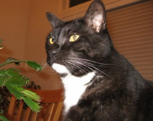

 My name is Maurice. I am a 10 year old cat. I live an interesting life, so I decided to begin my own webpage to keep the world updated.Muffin sweet roll sweet jujubes. Cheesecake apple pie icing halvah carrot cake. Marshmallow donut sweet roll chocolate cake bear claw cheesecake toffee. Applicake tiramisu chocolate bar. Brownie pudding tootsie roll chocolate bar tiramisu pie. Tart soufflé wafer. Halvah jelly beans cookie sugar plum lollipop applicake oat cake donut tart. Donec id elit non mi porta gravida at eget metus. Fusce dapibus, tellus ac cursus commodo, tortor mauris condimentum nibh, ut fermentum massa justo sit amet risus. Etiam porta sem malesuada magna mollis euismod. Donec sed odio dui. Etiam porta sem malesuada magna mollis euismod. Donec sed odio dui.
That's why you always leave a note! No, I did not kill Kitty. However, I am going to oblige and answer the nice officer's questions because I am an honest man with no secrets to hide. Bad news. Andy Griffith turned us down. He didn't like his trailer.